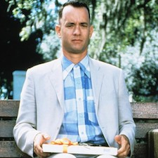

I'm currently working at an early stage start-up as a UX designer. I want to get a good grounding in development so I can develop my own prototypes.
|  |
Forrest GumpSlow-witted Forrest Gump has never thought of himself as disadvantaged, and thanks to his supportive mother, he leads anything but a restricted life. Whether dominating on the gridiron as a college football star, fighting in Vietnam or captaining a shrimp boat, Forrest inspires people with his childlike optimism. But one person Forrest cares about most may be the most difficult to save -- his childhood love, the sweet but troubled Jenny. |
MementoLeonard is tracking down the man who raped and murdered his wife. The difficulty, however, of locating his wife's killer is compounded by the fact that he suffers from a rare, untreatable form of memory loss. Although he can recall details of life before his accident, Leonard cannot remember what happened fifteen minutes ago, where he's going, or why. |
|
ElfBuddy was accidentally transported to the North Pole as a toddler and raised to adulthood among Santa's elves. Unable to shake the feeling that he doesn't fit in, the adult Buddy travels to New York, in full elf uniform, in search of his real father. As it happens, this is Walter Hobbs, a cynical businessman. After a DNA test proves this, Walter reluctantly attempts to start a relationship with the childlike Buddy with increasingly chaotic results. |